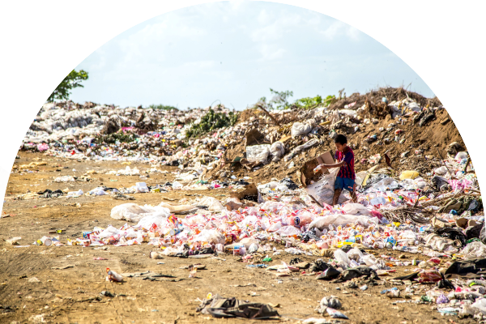
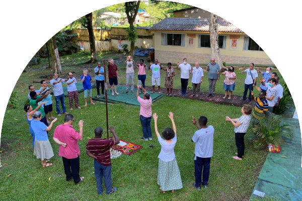
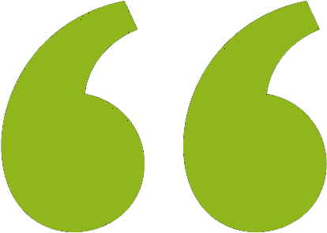

Misioneros CombonianosAmérica
Hacia una conversión ecológica misionera


Foro comboniano de Américasobre la Ecología Integral
Zoom: Abre link
Meeting ID: 835 1899 6171 Passcode: 799855 22 de mayo de 2023 9:00 - Perú, Ecuador 11:00 - Belem 15:00 - Kinshasa y Portugal 16:00 - Roma 17:00 - Nairobi
Meeting ID: 835 1899 6171 Passcode: 799855 22 de mayo de 2023 9:00 - Perú, Ecuador 11:00 - Belem 15:00 - Kinshasa y Portugal 16:00 - Roma 17:00 - Nairobi
P. Dario Bossimccj

El Foro comboniano de América sobre la Ecología Integral tiene como punto de partida el Fórum Social Panamazónico de Belém,el encuentro de los Misioneros Combonianos sobre la Ecología Integral y las experiencias de dos centros Laudato-Si en Kinshasa y Lima
Hna. Dilmacms
Programa
Horario del Perú
9:00 - Bienvenida - Oración
9:10 - Pacto comboniano con la Ecologia Integral
9:30 - Video sobre el FOSPA y la Asamblea comboniana sobre la Ecología Integral
9:40 - Primera Ponencia: Centro Laudato Sí – Lima, Perú (P. Juan Goycochea)
11:10 - Segunda Ponencia: Centro Laudato Si - Kinshasa (Maman Odile)
12:25 - Ejercios Espirituales sobre la Ecología Integral
12:40 - Conclusión
12:50 - Final
Ir. Betticms

Objetivos
- Visivilizar el trabajo por la ecología intgegral de los combonianos en América.
- Analizar los nuevos problemas ecológicos.
- Compartir estrategias de los centros en respuesta a sus desafíos
- Presentar la agenda de cada centro para el 2023
Ir. Betticms
Ponentes
Juan Goycochea
Centro Laudato - Si
Perú, CLSL
Maman Odile
Centro Laudato - Si
Kinshasa, CLSK
P. Enzo Balassomccj
Comité organizador
Dalva María Areira
Helena Laranjeiro
David Nyinga Dunga
Flavio Schmidt
Elena Larangeirosmc

Más información
David Nyinga DungaWhatsApp: +51 966 938 054
Quienes se empeñan en la defensa de la dignidad de las personas, pueden encontrar en la fe cristiana los argumentos más profundos para ese compromiso
LS 65
